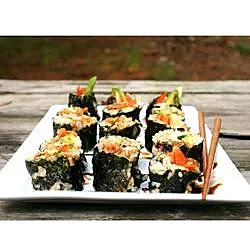

Crab Meat Sushi

Sushi is a light, tasty meal!
Another staple of asian cuisine, sushi comes in many different forms! This recipe uses imitation crab meat for a tasty yet vegan friendly dish!
Ingredients
- 2/3 cup uncooked short-grain white rice/li>
- 3 tablespoons rice vinegar
- 3 tablespoons white sugar
- 1 1/2 teaspoons salt
- 4 sheets nori seaweed sheets
- 1/2 cucumber, peeled, cut into small strips
- 2 tablespoons pickled ginger
- 1 avocado
- 1/2 pound imitation crabmeat, flaked
Instructions
- In a medium saucepan, bring 1 1/3 cups water to a boil. Add rice, and stir. Reduce heat, cover, and simmer for 20 minutes. In a small bowl, mix the rice vinegar, sugar ,and salt. Blend the mixture into the rice.
- Preheat oven to 300 degrees F (150 degrees C). On a medium baking sheet, heat nori in the preheated oven 1 to 2 minutes, until warm.
- Center one sheet nori on a bamboo sushi mat. Wet your hands. Using your hands, spread a thin layer of rice on the sheet of nori, and press into a thin layer. Arrange 1/4 of the cucumber, ginger, avocado, and imitation crabmeat in a line down the center of the rice. Lift the end of the mat, and gently roll it over the ingredients, pressing gently. Roll it forward to make a complete roll. Repeat with remaining ingredients.
- Cut each roll into 4 to 6 slices using a wet, sharp knife.
Enjoy!